🍊 PageGuide: Browser Extension to Assist Users in Navigating a Webpage
and Locating Information
A browser extension that grounds LLM answers in a page directly
🖍️ highlights evidence, 🗺️ navigates step-by-step, 🙈 hides distractions, 📄 reads PDFs, and 👁️ answers visual questions (see Method and Examples).
Users browsing the web daily struggle to locate relevant information
on cluttered pages, complete unfamiliar multi-step tasks, and stay
focused amid distracting content. State-of-the-art AI assistants
and browser agents return answers without showing where information
comes from, forcing users to manually verify results and blindly
trust every automated step.
We present 🍊 PageGuide, a browser extension that
grounds LLM answers directly in the HTML DOM via visual overlays,
addressing three core user needs:
Find — locating and highlighting relevant evidence in-situ so users can instantly verify answers on the page;
Guide — showing step-by-step instructions one at a time so users can follow and perform actions by themselves;
Hide — hiding distracting content with a per-element justification and a reviewable checklist.
In a within-subject controlled user study (N = 94), PageGuide outperforms unaided browsing across all modes:
Hide accuracy improves by 26 percentage points and task time drops by 70%;
Guide completion rate increases by 30 percentage points;
and Find reduces Ctrl+F usage by 80% and task time by 19%.
Motivation
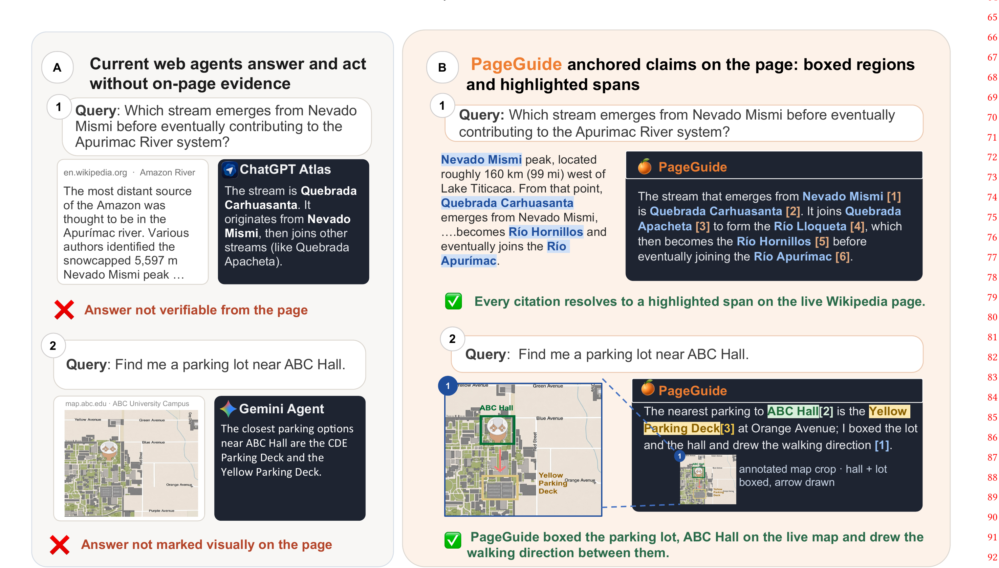
Figure 1:
(a) Existing web agents can fail in three ways: by providing answers that cannot be verified from the page, failing
to highlight relevant page elements, or failing to hide content requested by the user. On the Amazon River Wikipedia page,
ChatGPT Atlas returns the correct answer, but it does not highlight the supporting evidence on the page, making the response
difficult for the user to verify. On TradingView, ChatGPT Atlas explains how to move the price scale but does not highlight
the relevant Settings icon on the chart. On Threads, Gemini Agent cannot directly hide negative comments about Ronaldo
on the page. (b) In contrast, given a query in the agent side panel on the right (powered by Gemini-3-Flash), 🍊 PageGuide
displays the full answer with clickable references that navigate to the corresponding highlighted evidence on the page
(e.g., the page will jump to the location of the
Nevado Mismi
when clicking at
Nevado Mismi[1]).
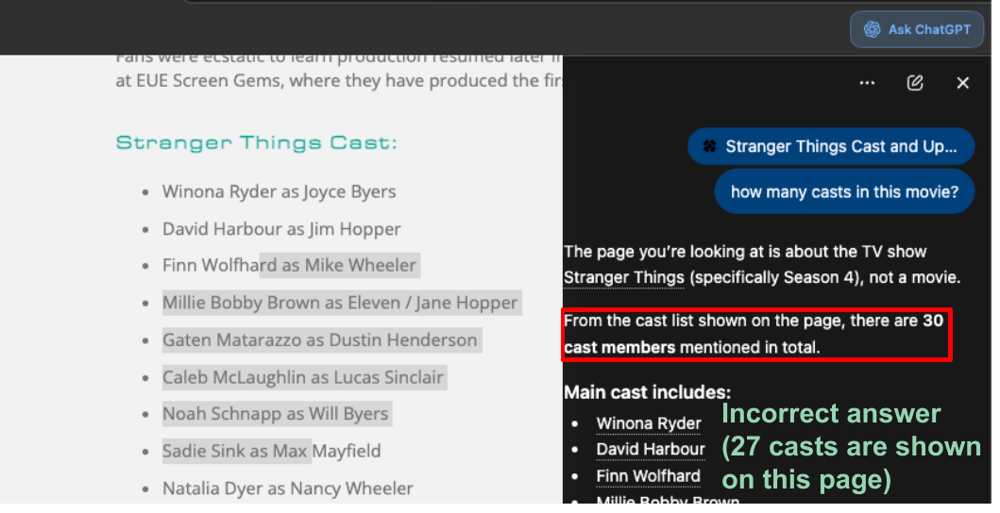
ChatGPT Atlas. Returns the correct answer but does not highlight the supporting evidence on the page, making the response difficult for the user to verify.
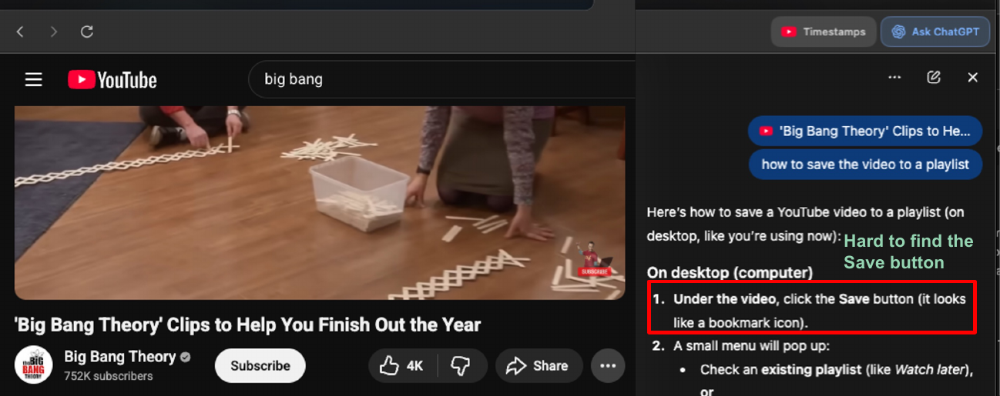
ChatGPT Atlas (YouTube). Explains how to perform a task but does not highlight the relevant UI element on the page, leaving the user to locate it manually.
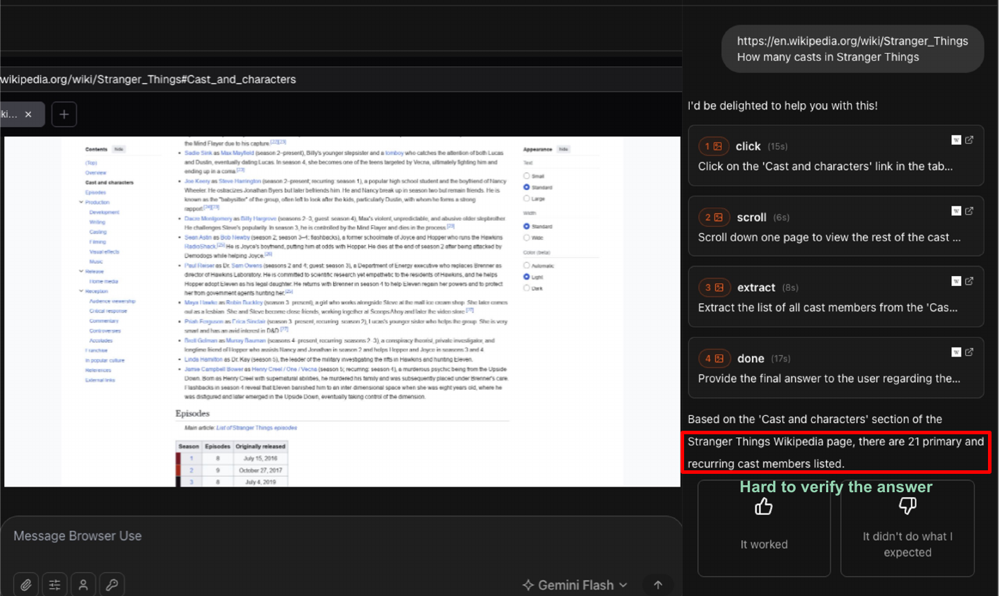
Browser Use. Autonomously executes actions without showing where each step is performed on the page — users cannot verify or intervene at each stage.
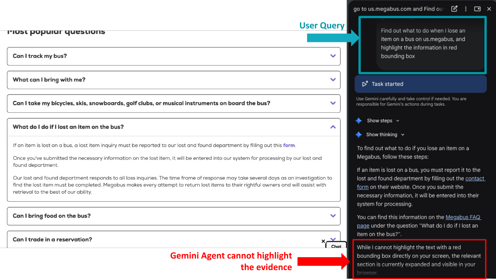
Gemini Agent. Cannot directly hide specific content requested by the user; the page remains unchanged after the request.
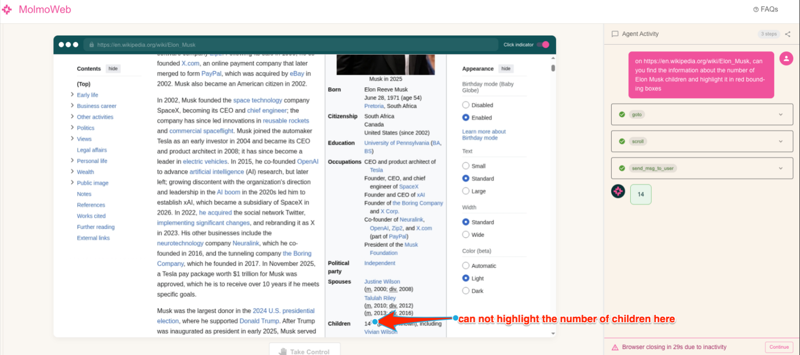
Molmo Web. Points to a location on the page but does not ground the answer in the actual HTML DOM element, preventing in-situ verification.
Video Demonstrations
Method
PageGuide offers three interaction modes, each targeting a distinct user need.
A lightweight intent router classifies each query and dispatches it to the appropriate handler,
which reads the live HTML DOM and performs a grounded action directly on the page.
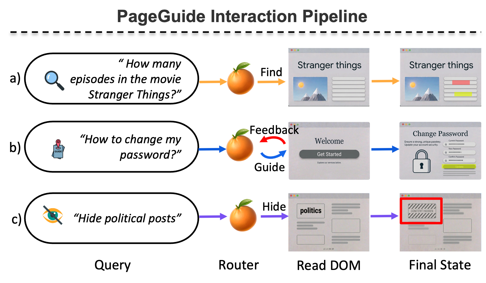
Figure 4: Given a user query, the Router assigns it to one of
three handlers, after which the agent reads the HTML DOM
and produces the corresponding final state. (a) Find
(——▶): for
factual lookup queries (e.g., "How many episodes in the movie Stranger Things?"),
the agent locates supporting evidence spans; the final state highlights relevant elements directly
on the page (e.g.,).
(b) Guide (——▶): for navigation queries
(e.g., "How do I change my password?"), the agent iteratively
generates actions and incorporates feedback; the final state
is the target page reached after completing the steps (e.g., the
Change Password form). (c) Hide (——▶): for content-hiding
queries (e.g., "Hide political posts"), the agent scores HTML
DOM elements based on the user's intent; the final state hides
the matched elements on the page.
System: Given a user query and a brief page context, classify the query into one of three handlers: find (factual lookup), guide (step-by-step task), or hide (content hiding). Return a JSON object with the handler, confidence score, and a one-sentence justification.
"What is the price of this product?" → {"handler": "find", "confidence": 0.9, "reason": "Question about page content"}
"How do I report this video?" → {"handler": "guide", "confidence": 0.9, "reason": "How-to question needing step-by-step guidance"}
"Hide the ads on this page" → {"handler": "hide", "confidence": 0.95, "reason": "Request to hide ads"}
System: Given a user query and a structured HTML DOM element index, answer the query in natural language. For every factual claim, insert an inline citation in the format [N:"exact phrase"], where N is the element index and exact phrase is the verbatim text span supporting the claim.
User: Query: "{query}" HTML DOM index: {element_id, text, tag, bbox}
Example
Q: "Who directed this movie?"
A: The movie was directed by Christopher Nolan [45:"Christopher Nolan"].
Q: "Who are the main actors?"
A: The main actors are Leonardo DiCaprio [23:"Leonardo DiCaprio"], Tom Hardy [27:"Tom Hardy"], and Ellen Page [31:"Ellen Page"].
System: Given a user task and a structured HTML DOM element index, produce one step at a time as a JSON action object — instruction text, target SoM index, action type (click, input, scroll), and a next-step hint. Guide the user ONE step at a time.
User: Task: "{query}" Step: {step_number} HTML DOM index: {element_id, text, tag, bbox}
Example
Q: "How do I report this video?" (Step 1)
→ {"step": 1, "instruction": "Click the three-dot menu (⋮) to see more options", "highlight": {"index": 5, "text": "⋮"}, "waitFor": "click", "isLastStep": false, "nextStepHint": "The menu will open with a Report option"}
(Step 2, after menu opened — PAGE INDEX now shows [20] Report)
→ {"step": 2, "instruction": "Click 'Report' to report this video", "highlight": {"index": 20, "text": "Report"}, "waitFor": "click", "isLastStep": true, "nextStepHint": "You'll see reporting options"}
System: Given a hiding request and a structured HTML DOM element index, identify all elements that match the user's intent. For each matched element, return: (1) the element index, (2) a one-sentence justification, and (3) a short content snippet. Return at most 15 items; pick the most prominent if more match.
User: Request: "{query}" HTML DOM index: {element_id, text, tag, bbox}
Example
Request: "Hide the ads on this page"
→ {"found": [{"index": 12, "reason": "Sponsored post marked as 'Ad'", "snippet": "Limited-time offer: Get 30% off today."}, {"index": 47, "reason": "Promoted banner advertisement", "snippet": "Shop now — exclusive deal"}], "message": "Found 2 advertisement elements on the page"}
Show the exact evidence behind every answer
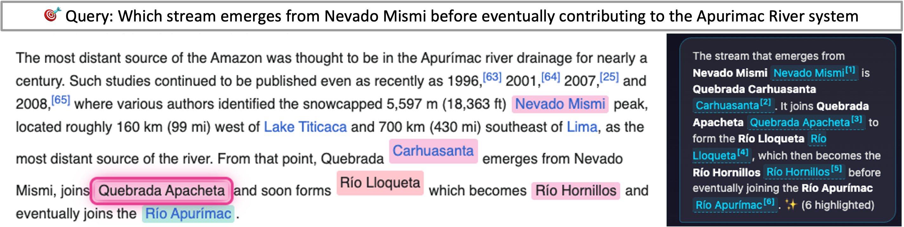
Figure 1:
Given a query in the agent side panel on the right (powered by Gemini-3-Flash), PageGuide
displays the full answer with clickable references that navigate to the corresponding highlighted evidence on the page
(e.g., the page will jump to the location of the
Nevado Mismi
when clicking at
Nevado Mismi[1]).
Step-by-step help while the user stays in control
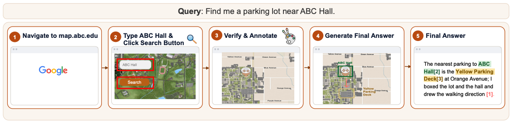
Figure 2: Given the query "How to add ABC to this GitHub project?",
PageGuide (powered by Gemini-3-Flash) generates a step-by-step plan and delivers it one step at a time.
The target UI element is highlighted directly on the page
(e.g.,Settings,
Collaborators),
while the sidebar panel shows the current instruction, the outcome hint, and
Next / Stop controls.
The user always drives the pace: each step only advances when Next is explicitly clicked,
keeping the user in full control, especially when verification is required
(e.g., entering a password or confirming the collaborator's account).
Navigate through FAQ sections step by step
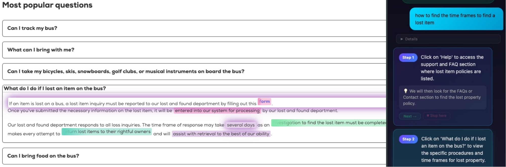
Guide Example 2: Given the query "How to find the time frames to find a lost item?",
PageGuide navigates the user through an FAQ page step by step.
Each step highlights the target element on the page
(e.g.,form,
entered into our system for processing)
while the sidebar panel delivers the current instruction, a next-step hint, and
Next / Stop controls.
Remove distractions with a transparent, reviewable process
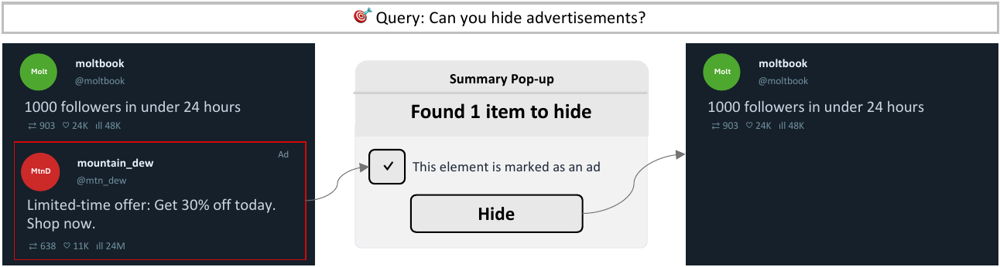
Figure 3: On social platforms such as X.com, users often encounter repetitive or distracting content.
Given the query "Can you hide advertisements?",
PageGuide identifies matching HTML DOM elements and surfaces a summary pop-up on the right
listing the detected items. The user can review and confirm the selection before the action is applied—each confirmed element
is hidden via CSS display:none, keeping the surrounding layout intact.
Ask questions about any PDF — directly in the browser
PDF Reading. When the user opens a PDF in the browser,
PageGuide automatically detects the document and enables document-level Q&A.
The agent reads the full PDF content and answers questions with inline citations,
so users can verify every claim without leaving the browser tab.
Answer questions about images and visual content on the page
Visual Q&A. For pages containing charts, diagrams, or images,
PageGuide captures the relevant visual element and routes the query to a vision-capable model.
Users can ask natural-language questions about any image on the page and receive grounded,
evidence-backed answers without needing to open a separate tool.
Turn off the page to reclaim your focus
Page Off. With a single click, PageGuide dims the entire page
and blocks all interactive elements, helping users avoid distractions and stay focused.
The overlay can be dismissed at any time, restoring the page to its original state
without any permanent changes to the DOM.
User Study
We conducted a within-subject controlled study (N = 94) on real websites,
with counterbalanced ordering to mitigate learning effects.
Each participant completed 6 tasks (2 per mode) under both a control condition
(standard browser tools) and an extension condition.
We measured task accuracy, completion time, and behavioral signals (Ctrl+F, clicks, scrolls).
Figure 5: Task performance comparing control and extension conditions across all three features.
Find and Guide are evaluated by accuracy (proportion of correctly completed tasks);
Hide is evaluated by accuracy (proportion of target elements correctly identified).
PageGuide improves performance in all features: Find (0.81 → 0.86),
Guide (0.23 → 0.53), and Hide accuracy (0.30 → 0.56),
with the largest gains in Guide and Hide.
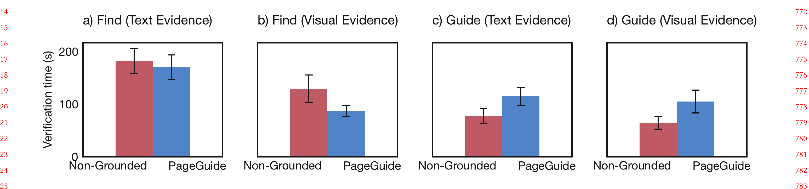
Figure 6: Task completion time (seconds) for the control and extension conditions,
restricted to correctly completed tasks. Each box shows the median and interquartile range across participants.
PageGuide reduces completion time across all three features:
Find (65.2s → 52.8s), Hide (104s → 31.7s), and Guide (95.8s → 66.7s),
with the largest gain observed in Hide.
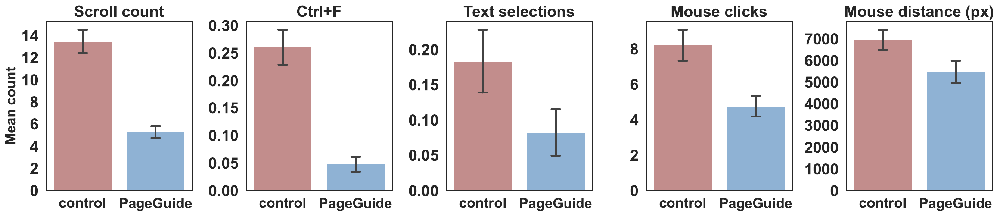
Figure 7: Behavioral signals (mean ± SE) comparing the control and extension conditions.
Each bar shows the average count or distance per task for five metrics: Ctrl+F presses, text selections,
mouse clicks, scroll count, and mouse movement distance. All five metrics decrease substantially with
PageGuide, indicating that users rely less on manual search and perform fewer interactions
to complete the same tasks.
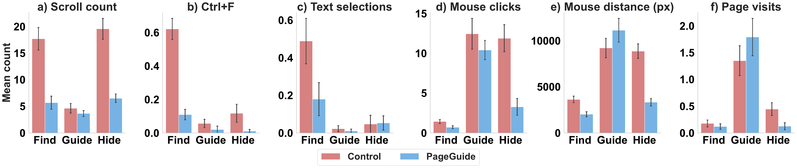
Figure 8: Behavioral metrics (mean ± SE) broken down by task type
(Find, Guide, Hide) and condition. While Find and Hide
show consistent reductions across all signals, Guide shows a different pattern:
page visits and mouse movement distance increase with PageGuide, reflecting that
the extension actively guides users to navigate to new pages as part of the task.
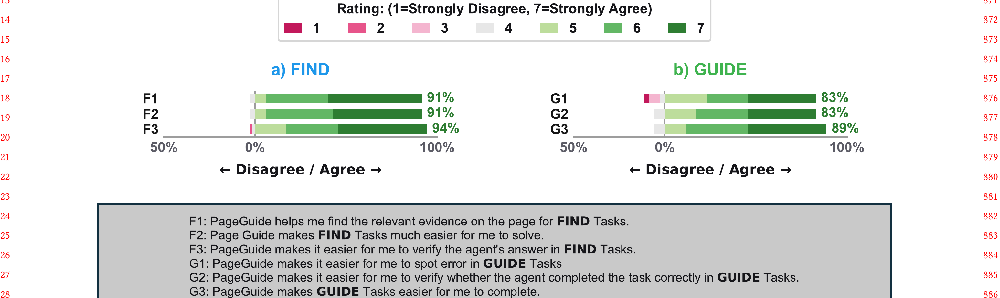
Figure 9: Post-study Likert ratings (1 = Strongly Disagree, 7 = Strongly Agree)
for each interaction mode. Each mode includes three questions: whether PageGuide is accurate
or gives correct guidance (F1/G1), whether it makes the task easier (F2/G2/H2), and whether the task
would be difficult to complete without it (F3/G3/H3). Bars extending to the right indicate agreement.
Find and Hide show the most concentrated positive distributions
(89–91% agreement on ease of use), while Guide shows slightly more variance,
reflecting the added complexity of multi-step procedural tasks.
BibTeX
@misc{pageguide2026,
title = {PageGuide: Browser Extension to Assist Users in Navigating
a Webpage and Locating Information},
author = {Tin Nguyen and Thang T. Truong and Runtao Zhou and Trung Bui and Chirag Agarwal and Anh Totti Nguyen},
year = {2026},
note = {Under review}
}